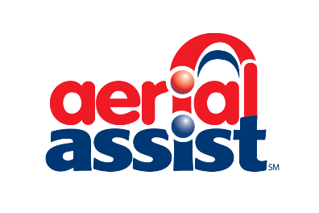

Click on the Image to See 2015 Video (Carson Semifinals Match 2)
2015
Game Description: RECYCLE RUSH
is a recycling-themed game played by two Alliances of three robots each. Robots score points by stacking
totes on scoring platforms, capping those stacks with recycling containers, and properly disposing of pool noodles,
representing litter.
Click on the Image to See 2014 Video (MSC Match 54)
2014
AERIAL ASSIST
is played by two competing Alliances of three robots
each on a flat 25’ x 54’ foot field, straddled by a truss suspended just
over five feet above the floor. The objective is to score as many balls
in goals as possible during a two-minute and 30-second match. The
more Alliances score their ball in their goals, and the more they work
together to do it, the more points their Alliance receives.